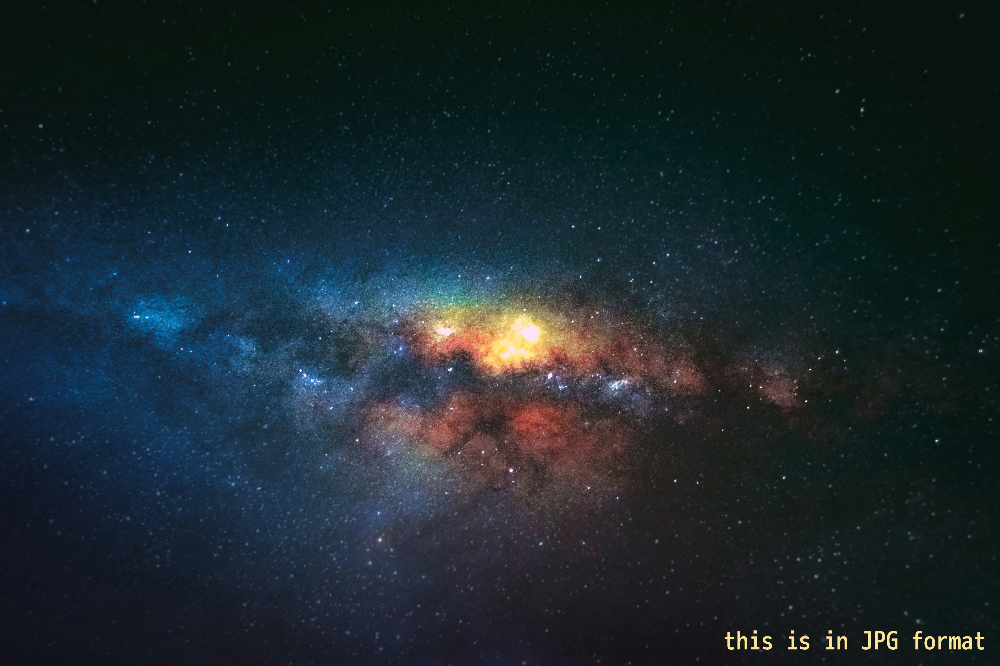

O cómo utilizar distintos formatos de imagen en función de lo que soporte nuestro navegador.
explicacion 🔻

¿No sabes qué formatos soporta tu navegador? Cada versión de la imagen lleva escrito en qué formato se está mostrando para que lo veas rápida y fácilmente :)
¿Cómo funciona?
Actualmente el formato JPEG XL sólo tiene soporte en versiones recientes de Safari (y algunas versiones de Chrome, Firefox y Edge de forma experimental, teniendo que activarlo manualmente). Si es nuestro caso, estaremos viendo la imagen adjunta en formato JXL
Y en última instancia, para navegadores más antiguos o que no soporten ninguno de los formatos de imagen mencionados, recurriremos a la opción por defecto y estaremos viendo la imagen en formato JPG